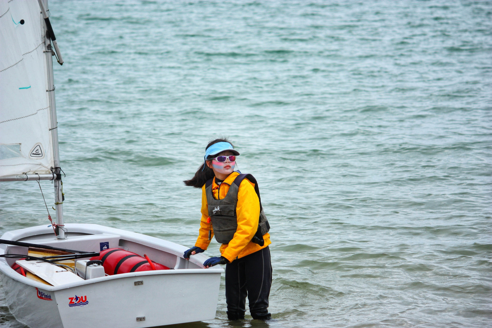
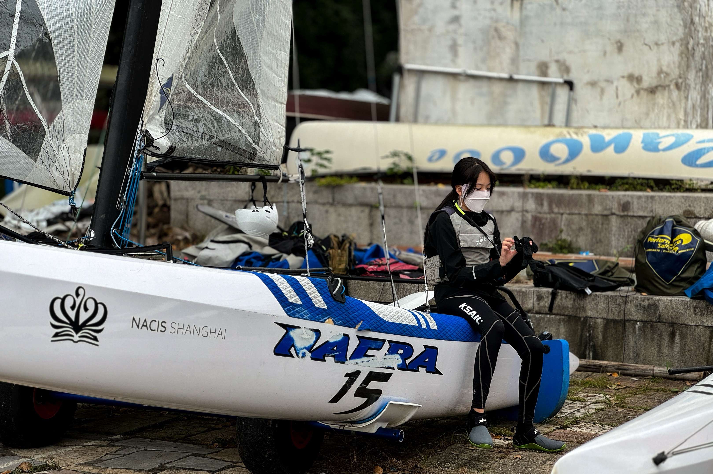
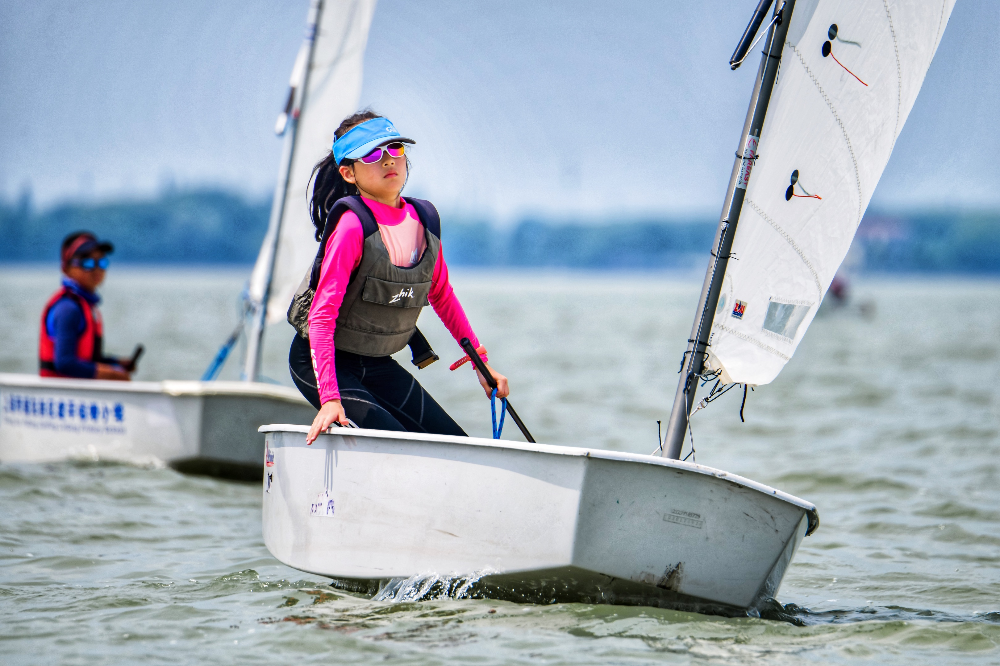

Sailor • Student • Explorer
From Shanghai to New Zealand - learning, sailing, and growing along the way
Hi, I'm Joanne Jiang, a sailor and student from Shanghai, now continuing my journey in New Zealand.
Sailing has shaped the way I learn, compete, and see the world. I have raced in both Optimist (OP) and Nacra 15 classes, building confidence through training, teamwork, and regattas.
Off the water, I enjoy anime, K-pop, and discovering new cultures. I like stories, music, and places that bring fresh energy and ideas.
This website is a small space for my story, updates, and the moments I want to remember.

The Optimist dinghy is where I first learned to read the wind, handle pressure, and build confidence on the water.

The Nacra 15 brings speed, teamwork, and precision. It has pushed me to make quicker decisions and trust the people I sail with.

Regattas give me a chance to test myself, learn from strong sailors, and keep improving one race at a time.
Sailing keeps me focused, brave, and curious.
I enjoy the art, stories, and imagination behind anime and manga.
K-pop brings rhythm, style, and energy to my everyday life.
Life in New Zealand gives me new perspectives while staying connected to my Chinese roots.
My story began in Shanghai, where I first found my love for the water.
I started with Optimist dinghies and quickly fell in love with the sport.
I raced in OP and Nacra 15 classes and was certified as a National First Grade Athlete in 2023.
A new chapter in New Zealand, with more to learn, explore, and sail.
Let's Connect
Follow my journey and connect with me on social media or email!